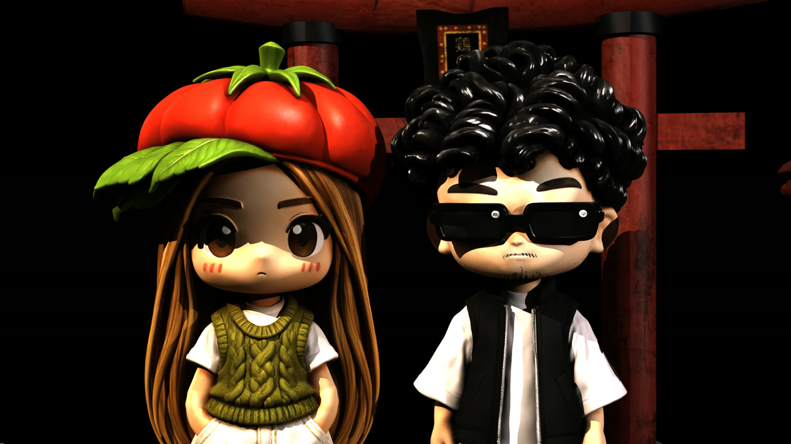

Due mini figure da 8 cm, una strada di Tokyo, un torii rosso. Una sorpresa fatta a mano, pixel dopo pixel.
Un pomodoro per cappello, una strada giapponese e la persona giusta accanto. Questa è la tua versione in miniatura — e presto la potrai tenere in mano.
Asfalto con le crepe, marciapiedi a lastre, il tombino di Osaka, una cassetta delle lettere rossa e un cantiere con il cono caduto. Sullo sfondo, il torii.